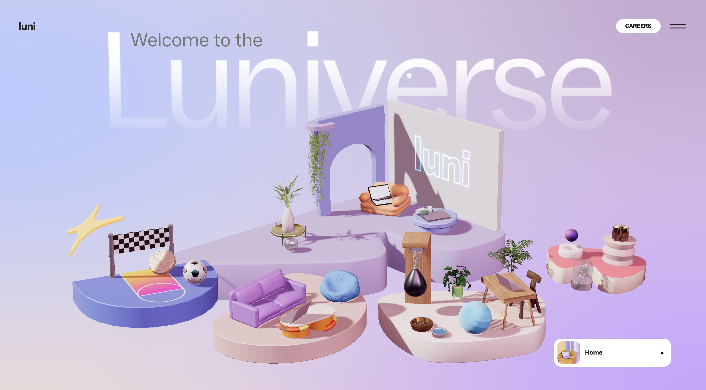
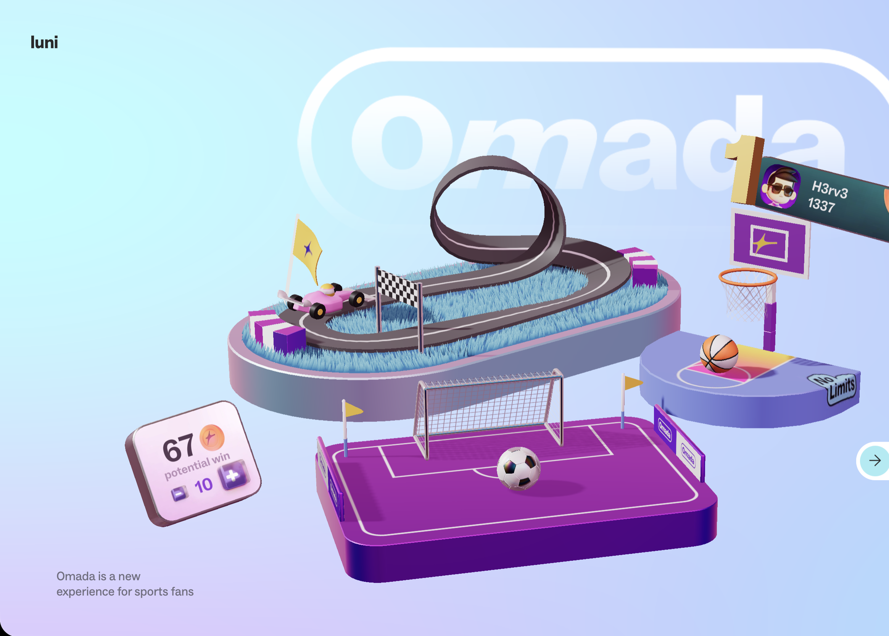

Interactive Experience Research Project
LUNI.APP
The Luni.app website is an interactive portfolio-style experience for a French app development company that creates mobile apps focused on productivity, creativity, and lifestyle. Rather than functioning like a traditional website, it is designed as an immersive digital world where users explore different sections through scrolling and interaction, showcasing the company’s products, culture, and creative identity.

Response 01
What was the first thing you paid attention to when interacting with the experience?
The first thing I paid attention to was the clean, minimal interface combined with the central interactive elements. The layout immediately draws focus to the main content area, with smooth animations and subtle motion guiding where to look. The visual design feels very deliberate, so my attention was quickly directed toward interacting rather than just reading.
Response 02
Spend two minutes with the experience and create a list of each of your discrete actions.
Over the two-minute interaction, I scrolled through the page, hovered over different elements, clicked into sections, and explored interactive components that responded to movement. I also paused at certain animations, moved my cursor around to test responsiveness, and revisited sections to better understand how they behaved. My actions were exploratory, moving between scrolling, hovering, and clicking.
Response 03
What part of the experience did you spend the most time engaging with?
I spent the most time engaging with the animated sections that responded to scrolling and cursor movement. These areas felt the most active and rewarding to explore because they changed based on my actions, making the experience feel less static and more immersive.

Response 04
What was the most common action in your two minute interaction with the experience?
The most common action was scrolling, as the experience is primarily structured as a continuous, scroll-based journey. Scrolling acts as the main way of navigating and triggering different animations and transitions.
Response 05
What is your impression of the intended primary goal of the interactive experience?
The primary goal of the experience appears to be to showcase the product in a highly engaging and memorable way, while encouraging users to explore its features through interaction. It feels less like a traditional website and more like a guided digital experience designed to communicate brand identity and innovation.
Response 06
How does the interactive experience communicate this primary goal?
The experience communicates this goal through smooth animations, responsive interactions, and a clear visual hierarchy that highlights key features. The use of motion and interactivity makes the user actively participate, reinforcing the idea of exploration and discovery rather than passive viewing.

Response 07
What is your impression of how the experience should be interacted with over time?
The experience feels designed for short but focused interactions, likely a few minutes at a time. However, it also encourages repeated visits, as users may return to re-explore details or experience the interactions again.
Response 08
How does the interactive experience communicate how it should be interacted with over time?
It communicates this through its pacing and structure. The scroll-based progression and layered interactions suggest that users should take their time and explore gradually, rather than rushing through. Subtle animations and transitions encourage lingering and revisiting sections.
Response 09
What other media forms (digital or otherwise) does the experience reference?
The experience references elements of video, motion graphics, and even game-like interaction. The smooth transitions and reactive elements feel similar to cinematic sequences, while the interactivity resembles aspects of simple game mechanics.